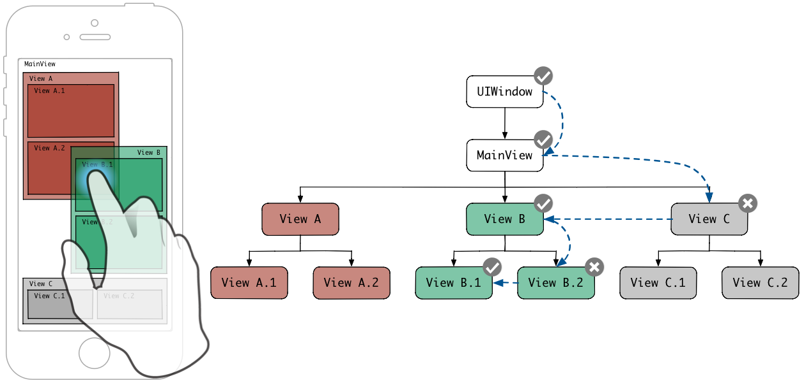

Hit-testing翻译为中文是"命中测试"，是确定touch-point是否在一个View内的过程,最终命中的View被称为hit-test view。iOS使用hit-testing来确定那一个UIView是用户手指下最靠前的且能够接收touch事件的view。hit-testing通过反向前序深度优先算法来便利视图的层次结构，从而实现上述功能。
在解释hit-testing 如何工作前，我们先要了解下hit-testing是在什么时候执行的。以下图分解了一个手指从触摸屏幕到离开屏幕的过程。
如上图所示，每次手指触碰屏幕都会触发hit-testing, 并且hit-testing在各个视图和gesture recognizer接收UIEvent 事件之前触发。
注意：不清楚是什么原因，hit-testing会连续执行多次。并且，hit-test view 的hit-testing也会执行多次。
hit-testing完成后，最前方且能够接收事件的view就会被确定为hit-test view。hit-test view与各个阶段(begin,move,end,cancel)的触摸事件序列的UITouch对象相关联。hit-test view确定后，开始接收touch事件序列。
注意：需要了解的是，手指被移动到了hit-test view外，而移动到了另一个view内时，hit-test视图依旧会接收整个touch事件的序列。
“The touch object is associated with its hit-test view for its lifetime, even if the touch later moves outside the view.”
Event Handling Guide for iOS, iOS Developer Library
如前所述，命中测试采用反向预定深度优先遍历（先访问根结点，然后遍历其子树由高到低的指标）。这种遍历可以减少遍历迭代次数，并在搜索到第一个包含touch-point的最深的子视图中停止搜索过程。这可能是因为一个视图总是在它的父视图之前渲染，而兄弟视图总是比在subviews具有较低索引的兄弟视图先渲染。这样，多个重叠的视图都包含一个touch-point时，在右子树的最深的视图是第一个被渲染的。
“Visually, the content of a subview obscures all or part of the content of its parent view. Each superview stores its subviews in an ordered array and the order in that array also affects the visibility of each subview. If two sibling subviews overlap each other, the one that was added last (or was moved to the end of the subview array) appears on top of the other.”
View Programming Guide for iOS, iOS Developer Library
下图显示了一个视图层次树及其匹配的用户界面。从左到右树枝序列影响着subviews的数组顺序。
图中可以看到，“VIewA”和“ViewB”和它们的子视图，“ViewA.2”和“View B.1”有重叠。但是“ViewB”在subViews中的索引值高于“ViewA”，“ViewB”和它的子视图会展现在“View A”和它的子视图之上。 因此，用户手指触摸 “View.b.1”与”View.A.2”重叠区域时，hit-testing返回“View.B.1”。
通过应用深度优先反向前序遍历算法，各个视图的遍历路径如图：

遍历算法先发送hitTest:withEvent: 到UIWindow，UIWindow是视图层次结构的根视图。此方法返回的值是包含了触摸点的最靠前面的视图。
下面的流程图说明了命中测试逻辑。

以下代码是hitTest:withEvent:可能的实现：
- (UIView *)hitTest:(CGPoint)point withEvent:(UIEvent *)event {
if (!self.isUserInteractionEnabled || self.isHidden || self.alpha <= 0.01) {
return nil;
}
if ([self pointInside:point withEvent:event]) {
for (UIView *subview in [self.subviews reverseObjectEnumerator]) {
CGPoint convertedPoint = [subview convertPoint:point fromView:self];
UIView *hitTestView = [subview hitTest:convertedPoint withEvent:event];
if (hitTestView) {
return hitTestView;
}
}
return self;
}
return nil;
}
hitTest:withEvent:方法首先检查视图是否允许接收touch事件。如果一个View允许接收touch事件，则必须满足以下所有条件：
self.hidden == NOself. self.userInteractionEnabled = YESself.alpha > 0.1pointInside:withEvent: == YES
当视图View允许接收touch事件时，该方法就会反向枚举它的子视图，然后逐个发送hitTest:withEvent:消息，直到有一个子视图返回了nil。第一个返回非nil值的子视图就是这些子视图中最靠前且在touch-point下的视图。如果所有视图都返回nil或者该视图没有子视图则函数返回self.
如果视图View不允许接收touch事件，该方法返回nil,而不需要在反向枚举。因此，hit-testing并不需要访问视图层次树上的所有视图。
hitTest:withEvent:运用场景
hitTest:withEvent:可以被覆盖，当所有触摸事件阶段的所有阶段的触摸事件想要被一个视图处理重定向到另外一个视图。
*注意: *因为hit-test仅仅在触摸事件顺序的第一次触摸事件（UITouchPhaseBegan phase(阶段)的触摸事件）发送给他的接收者之前，覆盖hitTest:withEvent:来重定向事件将会重定向所有phase的触摸事件。
1.增加视图区域
覆盖hitTest:withEvent:方法的一个用途就是，当一个视图的触摸区域应该大于他的边界的时候。例如下面的插图显示了一个大小为20*20的视图。这个大小对于处理附近的触摸来说太小了。因此，他的触摸区域可以通过覆盖hitTest:withEvent:在每个方向增加10。
- (UIView *)hitTest:(CGPoint)point withEvent:(UIEvent *)event {
if (!self.isUserInteractionEnabled || self.isHidden || self.alpha <= 0.01) {
return nil;
}
CGRect touchRect = CGRectInset(self.bounds, -10, -10);
if (CGRectContainsPoint(touchRect, point)) {
for (UIView *subview in [self.subviews reverseObjectEnumerator]) {
CGPoint convertedPoint = [subview convertPoint:point fromView:self];
UIView *hitTestView = [subview hitTest:convertedPoint withEvent:event];
if (hitTestView) {
return hitTestView;
}
}
return self;
}
return nil;
}
注意：为了能够正确的调用
hit-test，父视图的边界应该包含子视图希望触摸的区域，或者他的hitTest:withEvent:方法也应该被覆盖来包含期望的触摸区域。
2.传递触摸事件给下面的视图
有的时候对于一个视图忽略触摸事件并传递给下面的视图是很重要的。例如，假设一个透明的视图覆盖在应用内所有视图的最上面。覆盖层有子视图应该相应触摸事件的一些控件和按钮。但是触摸覆盖层的其他区域应该传递给覆盖层下面的视图。为了完成这个行为，覆盖层需要覆盖hitTest:withEvent:方法来返回包含触摸点的子视图中的一个，然后其他情况返回nil，包括覆盖层包含触摸点的情况：
- (UIView *)hitTest:(CGPoint)point withEvent:(UIEvent *)event {
UIView *hitTestView = [super hitTest:point withEvent:event];
if (hitTestView == self) {
hitTestView = nil;
}
return hitTestView;
}
3.传递触摸事件给子视图
一个不同的使用场景可能需要父视图重定向所有的触摸事件给他唯一的子视图。这个行为是有必要的当子视图部分占据他的父视图，但是子视图应该响应所有的触摸事件包括发生在父视图上的。例如，假设一个由一个父视图和一个pagingEnabled设置为YES和clipsToBounds设置为NO（为了实现传动带的效果）的UIScrollView组成的图片浏览器：

为了使UIScrollView响应不发生在自己边界内但是在父视图的边界内的触摸事件，父视图的hitTest:withEvent:方法应该像下面这样重写：
- (UIView *)hitTest:(CGPoint)point withEvent:(UIEvent *)event {
UIView *hitTestView = [super hitTest:point withEvent:event];
if (hitTestView) {
hitTestView = self.scrollView;
}
return hitTestView;
}
如有问题请指正, 谢谢。
另外一篇是一位大神的翻译，翻译了一半的时候才发现的，索性后半部分就直接粘贴了。
大神翻译：http://joywii.github.io/blog/2015/03/17/ioszhong-de-hit-testing/